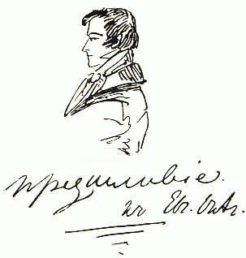
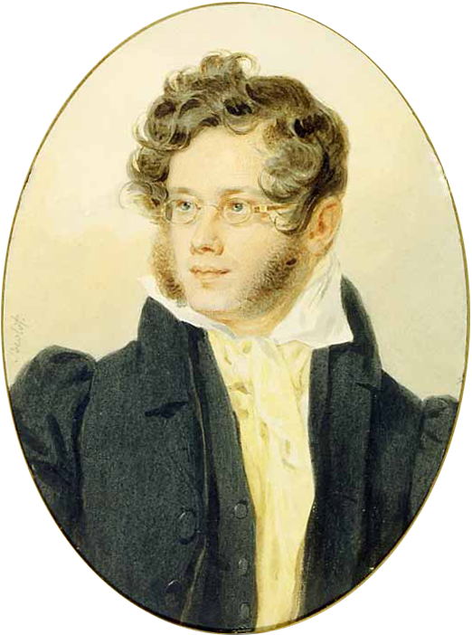
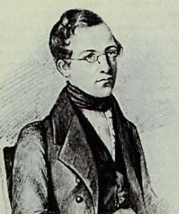

Pétri de vanité il avait encore plus de cette espèce d'orgueil qui fait avouer avec la même indifférence les bonnes comme les mauvaises actions, suite d'un sentiment de supériorité, peut-être imaginaire.
Tiré d'une lettre particuliêre.
Не мысля гордый свет забавить,
Вниманье дружбы возлюбя,
Хотел бы я тебе представить
Залог достойнее тебя,
Достойнее души прекрасной,
Святой исполненной мечты,
Поэзии живой и ясной,
Высоких дум и простоты;
Но так и быть — рукой пристрастной
Прими собранье пёстрых глав,
Полусмешных, полупечальных,
Простонародных, идеальных,
Небрежный плод моих забав,
Бессониц, лёгких вдохновений,
Незрелых и увядших лет,
Ума холодных наблюдений
И сердца горестных замет.
Глава первая
прим.
прим.
И жить торопится и чувствовать спешит.
К. Вяземский*
I
«Мой дядя самых честных правил,
Когда не в шутку занемог,
Он уважать себя заставил*
И лучше выдумать не мог.
Его пример другим наука:
Но, боже мой, какая скука
С больным сидеть и день и ночь,
Не отходя ни шагу прочь!
Какое низкое коварство
Полуживого забавлять,
Ему подушки поправлять,
Печально подносить лекарство,
Вздыхать и думать про себя:
Когда же чорт возьмёт тебя!»
II
Так думал молодой повеса,
Летя в пыли на почтовых*,
Всевышней волею Зевеса*
Наследник всех своих родных.—
Друзья Людмилы и Руслана!
С героем моего романа
Без предисловий, сей же час
Позвольте познакомить вас:
Онегин, добрый мой приятель,
Родился на брегах Невы,
Где, может быть, родились вы,
Или блистали, мой читатель;
Там некогда гулял и я:
Но вреден север для меня.1
III
Служив отлично-благородно*,
Долгами жил его отец,
Давал три бала ежегодно
И промотался наконец.
Судьба Евгения хранила:
Сперва Madame за ним ходила,
Потом Monsieur её сменил;
Ребенок был резов, но мил.
Monsieur l'Abbé, француз убогой,
Чтоб не измучилось дитя,
Учил его всему шутя,
Не докучал моралью строгой,
Слегка за шалости бранил,
И в Летний сад гулять водил.
IV
Когда же юности мятежной
Пришла Евгению пора,
Пора надежд и грусти нежной,
Monsieur прогнали со двора.
Вот мой Онегин на свободе;
Острижен по последней моде;
Как dandy 2 лондонский одет —
И наконец увидел свет.
Он по-французски совершенно
Мог изъясняться и писал;
Легко мазурку танцовал,
И кланялся непринужденно;
Чего ж вам больше? Свет решил,
Что он умен и очень мил.
V V
Мы все учились понемногу
Чему-нибудь и как-нибудь,
Так воспитаньем, слава богу,
У нас немудрено блеснуть.
Онегин был по мненью многих
(Судей решительных и строгих)
Ученый малый, но педант*:
Имел он счастливый талант
Без принужденья в разговоре
Коснуться до всего слегка,
С ученым видом знатока
Хранить молчанье в важном споре,
И возбуждать улыбку дам
Огнём нежданных эпиграмм*.
Предисловия, примечания, строфы и отдельные стихи из ранних редакций, отсутствующие в окончательной авторской редакции романа, а также варианты строф и отдельных стихов из черновых и беловых рукописей.
Здесь сохранена орфография и пунктуация издания, по которому сверялся текст:
Академия наук СССР Институт литературы (Пушкинский дом)
А. С. ПУШКИН
Полное собрание сочинений в десяти томах Том пятый Издательство Академии наук СССР Москва—Ленинград 1949
Подведите курсор к левой границе страницы, чтобы узнать к какой главе относится видимый текст.
В примечаниях к некоторым иностранным словам в квадратных скобках даётся этимологическая справка. Например: Этимология [греч. etymologia < etymon истина; основное значение слова + …логия < греч. logos слово; понятие, учение (соответствует по значению словам «наука», «знание»)] — происхождение слова. Греческие слова даны в латинской транскрипции. Знак < означает: «происходит от …», «на основе…».
Слева от текста романа, приводятся предисловия, примечания, строфы или отдельные стихи из ранних редакций, отсутствующие в окончательной авторской редакции романа, а также варианты строф или отдельных стихов из черновых и беловых рукописей. Для их чтения нажмите на слово
прим.
или номер строфы
I, II … V …
Пушкин начал первую главу 9 мая 1823 г., 28 мая приступил к переписке и переработке написанного. С этого дня он непрерывно работал над своим произведением. Глава была закончена 22 октября в Одессе. Первоначальный текст впоследствии подвергся переработке. Ряд строф Пушкин исключил, некоторые новые внес в уже законченный текст главы. Глава была напечатана отдельной книжкой в 1825 г. (вышла в свет 18 февраля); второе издание вышло в конце марта 1829 г.
В этом издании глава была посвящена брату, Льву Сергеевичу Пушкину. Стихов «Не мысля гордый свет забавить» не было (см. четвертую главу).
После предисловия следовал «Разговор книгопродавца с поэтом». В конце главы примечание:
«N. В. Все пропуски в сем сочинении, означенные точками, сделаны самим автором».
Последнее примечание было вызвано тем, что запрещалось означать точками исключённые цензурой места. В дальнейшем вообще некоторое время запрещали означать какие бы то ни было пропуски точками, и в главах 4—7 точек, означающих пропуски, уже нет.
В беловой рукописи было два эпиграфа к первой главе, не появившихся в печати:
Собранье пламенных замет
Богатой жизни юных лет.*
Баратынский.*
Nothing is such an ennemy to accuracy of judgment as a coarse discrimination.*
Burke.
В печати Пушкин оставил только эпиграф из стихотворения Вяземского «Первый снег».

Первая глава была издана в 1825 г. с предисловием:
Вот начало большого стихотворения, которое, вероятно, не будет окончено.
Несколько песен, или глав Евгения Онегина уже готовы. Писанные под влиянием благоприятных обстоятельств, они носят на себе отпечаток веселости, ознаменовавшей первые произведения автора Руслана и Людмилы.
Первая глава представляет нечто целое. Она в себе заключает описание светской жизни петербургского молодого человека в конце 1819 года и напоминает Беппо, шуточное произведение мрачного Байрона.
Дальновидные критики заметят конечно недостаток плана. Всякий волен судить о плане целого романа, прочитав первую главу оного. Станут осуждать и антипоэтический характер главного лица, сбивающегося на Кавказского Пленника, также некоторые строфы, писанные в утомительном роде новейших элегий, в коих чувство уныния поглотило все прочие*. Но да будет нам позволено обратить внимание читателей на достоинства, редкие в сатирическом писателе: отсутствие оскорбительной личности и наблюдение строгой благопристойности в шуточном описании нравов.
В рукописи — вместо последней фразы предисловия:
Звание издателя не позволяет нам хвалить, ни осуждать сего нового произведения. Мнения наши могут показаться пристрастными. Но да будет нам позволено обратить внимание почтеннейшей публики и г.г. журналистов на достоинство, еще новое в сатирическом писателе: наблюдение строгой благопристойности в шуточном описании нравов. Ювенал, Петрон, Вольтер и Байрон — далеко не редко не сохранили должного уважения к читателям и к прекрасному полу. Говорят, что наши дамы начинают читать по-русски. Смело предлагаем им произведение, где найдут они под легким покрывалом сатирической веселости наблюдения верные и занимательные.
Другое достоинство, почти столь же важное, приносящее не малую честь сердечному незлобию нашего автора, есть совершенное отсутствие оскорбительной личности. Ибо не должно сие приписать единственно отеческой бдительности нашей цензуры, блюстительницы нравов, государственного спокойствия, сколь и заботливо охраняющей граждан от нападения простодушной клеветы, насмешливого легкомыслия.

Князь Пётр Андреевич Вя́земский (1792–1878) Поэт, приятель Пушкина.
Ему принадлежат такие ставшие широко известными афоризмы, как:
• Не напрасно дедов слово
Затвердил народный ум:
«Что для русского здорово,
То для немца карачун*!»
• В России суровость законов умеряется их неисполнением.

Евгений Абрамович Бараты́нский (1800–1844)
Поэт, друг Пушкина.
«Никто более Баратынского не имеет чувства в своих мыслях и вкуса в своих чувствах»,— писал Пушкин.
МУЗА
Не ослеплён я музою моею:
Красавицей её не назовут,
И юноши, узрев её, за нею
Влюблённою толпой не побегут.
Приманивать изысканным убором,
Игрою глаз, блестящим разговором
Ни склонности у ней, ни дара нет;
Но поражён бывает мельком свет
Её лица необщим выраженьем,
Её речей спокойной простотой;
И он скорей, чем едким осужденьем,
Её почтит небрежной похвалой.
Е. А. Баратынский, 1829